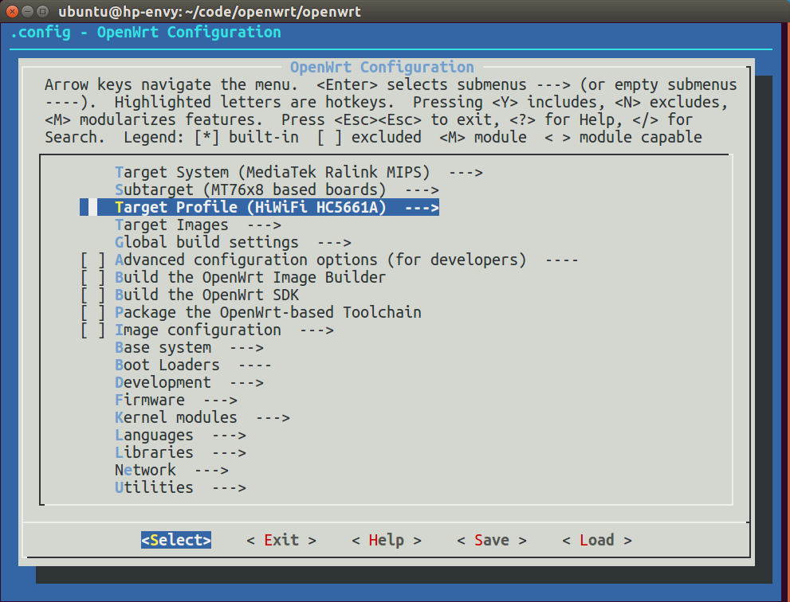

编译固件 Build OpenWrt Firmware
如果从网上下载的固件不能满足需求，那就需要自己编译了。
OpenWrt系统已经发布了多个版本，如下：
| 发布时间 | 版本号 | 开发代号 |
|---|---|---|
| 2017年10月 | 17.01.4 | LEDE |
| 2016年3月 | 15.05.1 | Chaos Calmer |
| 2015年9月 | 15.05 | Chaos Calmer |
| 2014年10月 | 14.07 | Barrier Breaker |
| 2013年4月 | 12.09 | Attitude Adjustment |
新的硬件支持和软件都会加入到最新版本中，所以优先使用最新版。
下载最新代码
首先把系统代码下载下来，OpenWrt官方代码在https://github.com/openwrt/openwrt，如果下载很慢，可以试试国内镜像：https://coding.net/u/openwrtio/p/openwrt/git。如果以前下载过，记得时常更新。指令如下：
mkdir -p ~/code/openwrt/dl
cd ~/code/openwrt/
git clone git@github.com:openwrt/openwrt.git
cd openwrt
git pull origin master
ln -s ../dl ./
查看是否支持手中的路由器
输入命令打开配置界面，搜索品牌或型号（按斜杠/，然后输入），就可以看到OpenWrt是否支持你的路由器了。可以看到已支持：极路由4（HC5962）、极路由3（HC5861）、极路由2（HC5761）、极路由1s（HC5661/HC5661A）、小米路由器mini(已停产)、WRTNode2Q、WRTNode2R、WRTNode2P。
推荐使用价格低廉的 WRTNode2P（官网￥128） 或 极路由器1s HC5661A（京东￥89） 进行开发。
cd openwrt
make menuconfig
本文以极路由器1s HC5661A为例，它是联发科MT7628芯片，所以Target System选MediaTek Ralink MIPS，Subtarget选MT76x8 based boards，然后进入Target Profile选HiWiFi HC5661A。

更新可选的软件源（Feeds）
系统必须的软件是和系统代码集成在一起的，在package目录里，而其他可选的软件在各个订阅源里（地址在feeds.conf.default里），一般会需要一些，所以进行下载更新，指令如下：
./scripts/feeds update -a
./scripts/feeds install -a

可以看到，feeds目录中出现了很多文件，package/feeds里出现了很多软链接指向feeds。
软件配置
然后再打开配置界面，选择需要的软件（*是集成到固件里，M是编译成ipk手动安装），然后退出保存。建议取消dnsmasq，集成dnsmasq-full。常用的软件有：
| 位置 | 用途 |
|---|---|
| Base system > dnsmasq-full > Build with IPset support. | dnsmasq的IPset |
| LuCI > 1. Collections > luci | 路由器网页管理后台 |
make menuconfig


编译
使用-j参数开启多核编译，速度会加快。指令如下：
make tools/compile -j V=4
make toolchain/compile V=s
make world -j V=4
make -j V=4 | tee build.log
如果报错：
openwrt/staging_dir/toolchain-mipsel_24kec+dsp_gcc-4.8-linaro_uClibc-0.9.33.2/stamp/.toolchain_install] Error 2
可能是因为文件下载失败，需要排查dl目录，去网上搜索文件名，手动下载放进去，并删除*.dl文件。指令如下：
ls dl/*.dl
rm dl/*.dl
rm dl/*.md5sum
然后等待即可。快则几十分钟，慢则几个小时，视CPU性能而定。编译成功后，会在bin目录中生成固件，比如小米路由mini的固件是openwrt-ramips-mt7620-xiaomi-miwifi-mini-squashfs-sysupgrade.bin。

刷机
极路由刷OpenWrt命令如下：
scp bin/targets/ramips/mt7628/lede-ramips-mt7628-hc5661a-squashfs-sysupgrade.bin root@192.168.199.1:/tmp/
ssh root@192.168.199.1
mtd write /tmp/lede-ramips-mt7628-hc5661a-squashfs-sysupgrade.bin firmware
reboot
小米路由开放root，按照文档开启（http://miwifi.com/miwifi_open.html），然后把固件scp进去，刷机。指令如下：
{kind=link}
scp bin/ramips/openwrt-ramips-mt7620-xiaomi-miwifi-mini-squashfs-sysupgrade.bin root@192.168.31.1:/tmp/
ssh root@192.168.31.1
cat /proc/mtd
mtd -r write /tmp/openwrt-ramips-mt7620-xiaomi-miwifi-mini-squashfs-sysupgrade.bin OS1

PS：如果写入firmware报错“Could not open mtd device: firmware”和“Can't open device for writing!”，使用cat /proc/mtd查看闪存，改成写入OS1即可。
刷机重启后，就能看到熟悉的OpenWrt路由器界面了，可以看到根目录有11M可写，可以安装各种ipk软件，拯救了小米路由的官方废柴系统，可玩性大大增加。